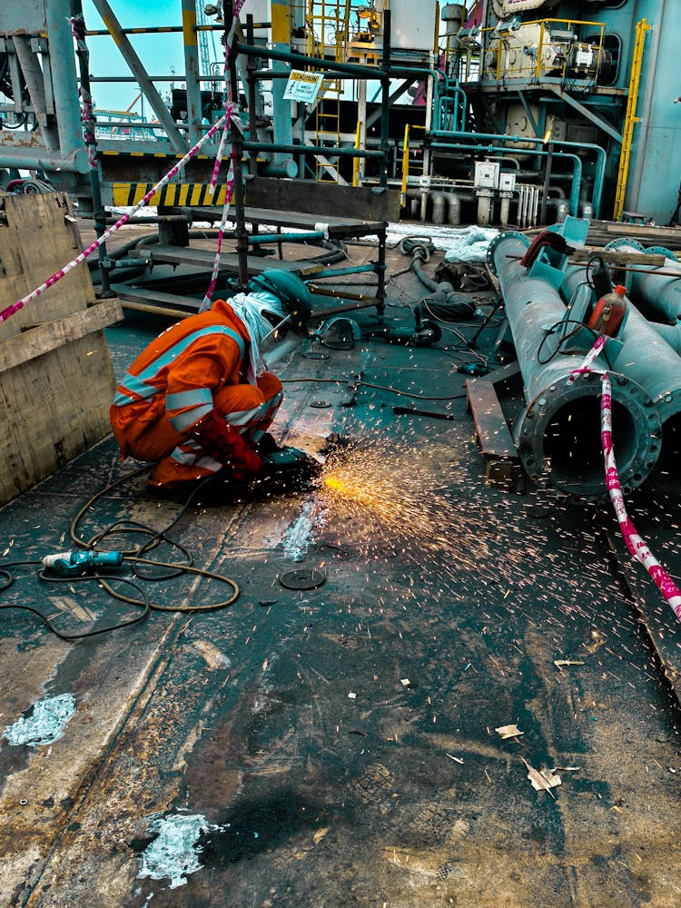
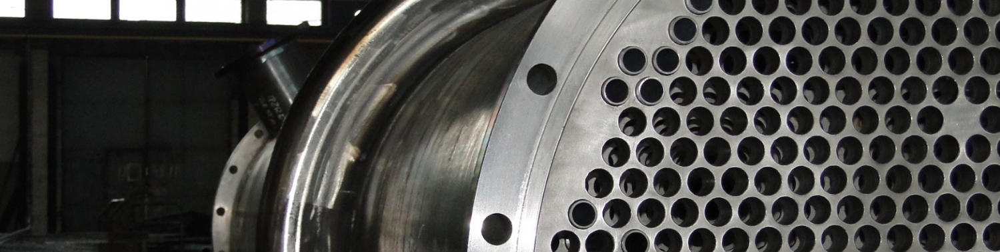
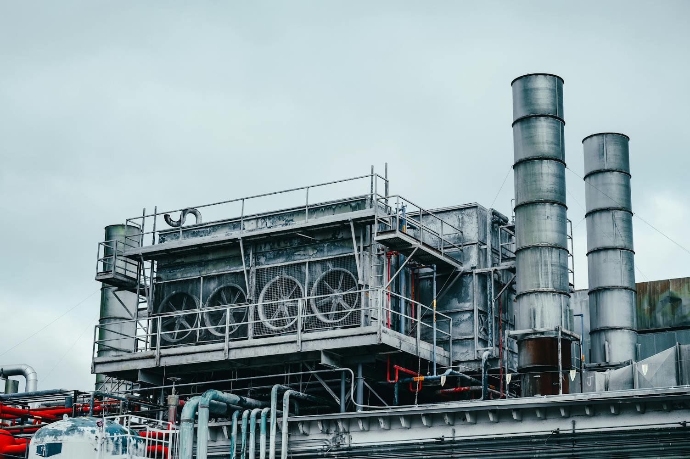
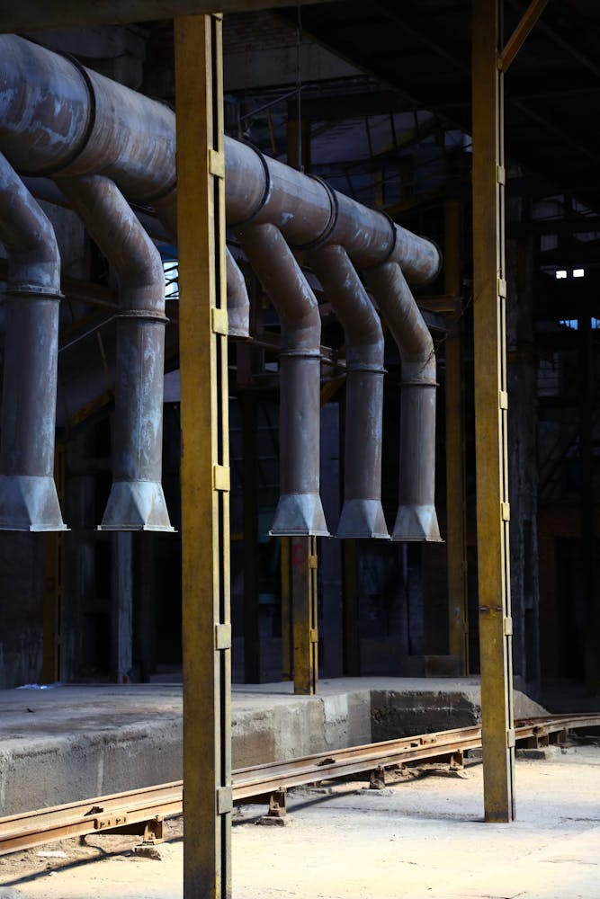

Przeglądy okresowe
Kontrola stanu armatury i elementów wykonawczych oraz planowanie prac prewencyjnych.
Prowadzimy serwis armatury przemysłowej w trybie planowym i interwencyjnym. Zakres obejmuje demontaż, czyszczenie, ocenę stanu technicznego, naprawę, regulację i ponowny montaż elementów.
Dla działów utrzymania ruchu przygotowujemy czytelne raporty serwisowe, rekomendacje kolejnych działań oraz harmonogramy przeglądów zmniejszające ryzyko nieplanowanych zatrzymać.
Kontrola stanu armatury i elementów wykonawczych oraz planowanie prac prewencyjnych.

Demontaż, czyszczenie, regeneracja podzespołów i przywrócenie parametrów pracy armatury.
Szybkie działania serwisowe przy awariach i uszkodzeniach wpływających na ciągłość pracy instalacji.
Analizujemy objawy, warunki pracy instalacji i dobieramy tryb działania.
Wykonujemy demontaż, naprawę, regulację i testy funkcjonalne elementów.
Uruchamiamy instalację, weryfikujemy parametry i potwierdzamy gotowość eksploatacyjną.
Przekazujemy raport z serwisu oraz zalecenia do dalszego utrzymania ruchu.



Zadzwoń do nas. Ustalimy tryb interwencji i priorytet działań dla Twojej instalacji.